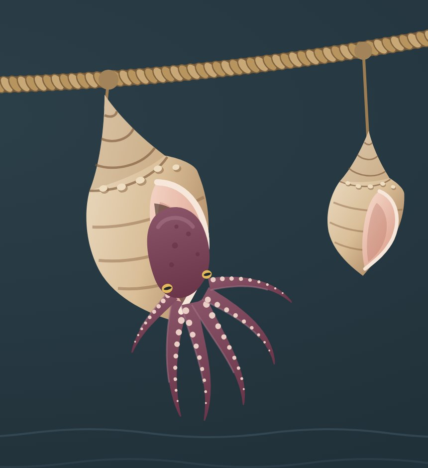

메뉴판 디자인 · SD-MN76
이 디자인으로 상담하기
소라방 주꾸미
서해 포구 앞에서 소라방으로 잡은 주꾸미를 철판볶음, 샤브, 숙회로 내는 식당의 A4 메뉴판입니다. 위쪽 남색 띠에는 소라 껍데기를 엮은 밧줄을 가로로 걸고, 그중 한 껍데기에서 주꾸미가 다리를 내민 그림을 그렸습니다. 아래에는 대표 메뉴 주꾸미 철판볶음 중 34,000원 · 대 48,000원을 자색 상자에 맵기 세 단계와 함께 두고, 다른 철판 메뉴와 샤브·곁들임, 볶음밥 먹는 순서, 마실 것, 원산지 표시까지 한 장에 담았습니다.
A4 세로 · 1장 · 한국어 · 원화모래 베이지 · 바다 남색 · 주꾸미 자색소라방 밧줄과 주꾸미 그림
![소라방 주꾸미 메뉴판 전체. 모래빛 베이지 바탕 위쪽 왼쪽에 서해 포구 앞 · 소라방으로 잡은 주꾸미라는 작은 글과 큰 제목 소라방 주꾸미가 있고 주꾸미 글자만 자색입니다. 오른쪽에 11:30 – 22:00, 쉬는 시간 15:00 – 17:00, 매주 화요일 쉼이 있습니다. 그 아래 짙은 바다 남색 띠에 꼬인 밧줄이 가로로 늘어져 있고 소라 껍데기 다섯 개가 끈에 매달려 있습니다. 오른쪽에서 두 번째 큰 껍데기 입구에서 자줏빛 주꾸미가 머리를 내밀고 여덟 다리를 아래로 늘어뜨렸습니다. 왼쪽 아래에 소라 껍데기를 줄에 엮어 바다에 내리면, 주꾸미가 들어가 삽니다, 그 줄을 새벽에 걷어 올린 주꾸미만 받아 하루 안에 냅니다라는 글이 있습니다. 아래 왼쪽 철판 칸에는 2인부터 · 콩나물국과 반찬 세 가지 안내와 자색 상자 안 주꾸미 철판볶음, 중 · 2인 34,000, 대 · 3–4인 48,000, 맵기 순한맛 · 보통 · 매운맛 점 표시가 있고, 이어서 주꾸미 삼겹 철판 2인 38,000, 주꾸미 차돌 철판 2인 39,000, 마무리 볶음밥 1인 3,000, 치즈 · 우동사리 · 당면 각 2,000이 있습니다. 오른쪽 한 그릇 · 곁들임 칸에 3–5월 알배기 표시가 붙은 주꾸미 샤브 2인 42,000, 주꾸미 숙회 26,000, 주꾸미 덮밥 11,000, 해물파전 16,000, 뚝배기 계란찜 5,000과 볶기, 볶음밥, 눌리기 세 단계 안내가 있습니다. 아래 가로줄에 마실 것 소주 · 맥주 · 막걸리 각 5,000, 탄산 2,000, 식혜 3,000, 맨 아래에 원산지 표시와 포장 · 예약 000-0000-0000이 있습니다.](page1.png)

소라방 그림소라 껍데기를 줄에 엮어 주꾸미를 잡는 방식을 그대로 그려, 이 집 주꾸미가 어디서 오는지 한눈에 보이게 했습니다.
바꿀 수 있는 것
- 메뉴 이름, 가격, 영업시간과 원산지 표시
- 그림 속 해산물을 낙지, 문어, 꼬막 등 가게 대표 재료로
- A4 테이블 메뉴판, 벽에 거는 큰 메뉴판, 포장 안내 카드